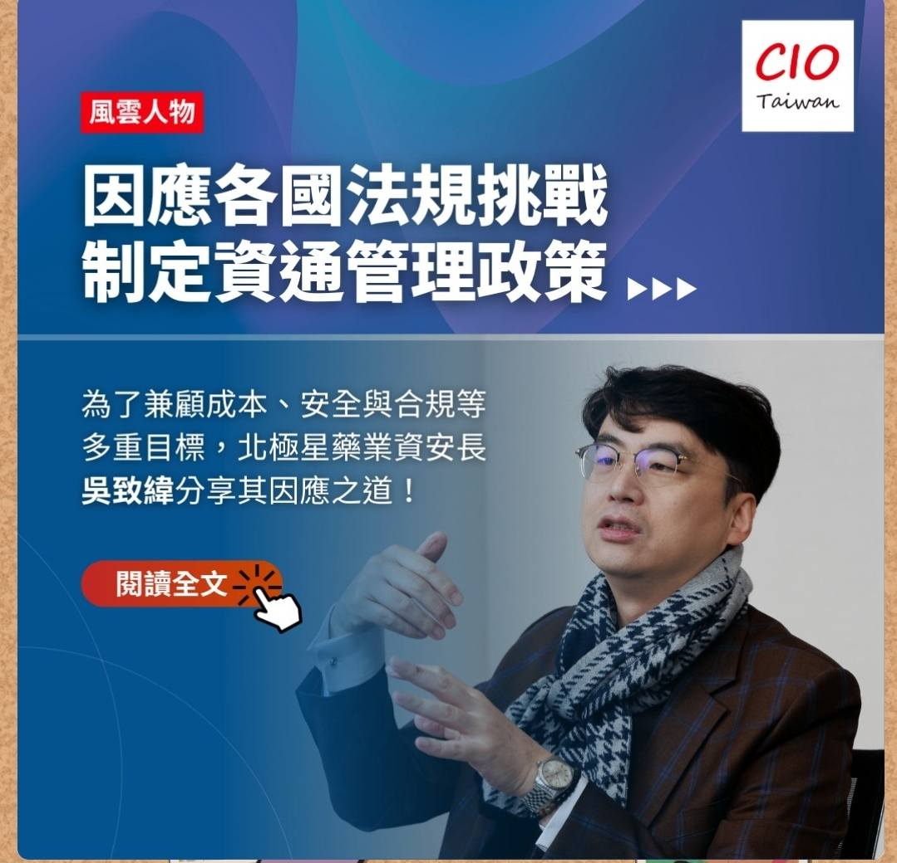

找到價值核心
判斷什麼值得保護、投資與放大。
致緯國際智權顧問
CWIP / 生技醫藥企業智慧財產策略顧問
在市場看見機會之前，先完成保護企業未來的布局。
CWIP 協助生技醫療與製藥企業，讓智慧財產與募資、IPO、技術授權、盡職調查及國際成長策略保持一致。

CWIP 的策略觀點
一件專利的價值，取決於它能否支撐企業想要創造的未來。
CWIP 從企業目標出發：募資、IPO、技術授權、市場進入或競爭防禦，再回頭判斷公司應保護什麼、應建立哪些證據，以及專利組合應如何設計。
專利申請與程序由合作事務所執行；CWIP 專注於更高層次的問題：當公司在真實市場中接受投資人、合作夥伴或競爭者檢驗時，這套智財策略能否真正創造籌碼。
致緯品牌精神
「致緯」是 CWIP 的策略方法：先找到真正值得保護與投資的技術核心，再把智財、交易與國際市場編織成企業成長的全局。
判斷什麼值得保護、投資與放大。
串連智財、交易與全球市場，形成可執行的策略。
看清價值所在，完成通往未來的布局。
企業重要決策情境
為生技醫藥企業董事長、CEO、董事會與投資人設計，處理不能等到事後才回頭補救的重大決策。
建立足以通過投資人、承銷商與監管檢視的智財體質與企業價值敘事。
在談判前掌握資產品質、競爭籌碼、潛在缺口與交易風險，提升授權與 DD 表現。
在資源與方向定型前，讓科研投入、產品策略與專利架構朝同一目標前進。
透過專利情報預判競爭者、選擇市場，設計可防禦且能持續成長的國際路徑。
把技術與智財轉化為支撐估值、合作、投資及董事會決策的具體證據。
在權利受到挑戰前，預先檢驗侵權、無效與執行風險，建立談判與訴訟準備。
CWIP 的核心信念
企業的未來，不是在競爭開始時決定，而是在布局開始時決定。
謀定而後動，決勝千里之外。
策略方法
以科學洞察、經營方向與智財架構形成一致且可執行的策略路徑。
整合科學、競爭者、專利、市場與交易訊號，辨識機會與風險。
把企業目標與研發優先順序、資本策略、目標市場及執行條件連結起來。
依未來授權、募資與競爭需求，設計權利範圍、專利組合、營業秘密與治理制度。
確保策略在投資人、合作夥伴、法院與交易對手面前清楚、可信且可防禦。

為什麼選擇 CWIP
吳致緯博士擁有超過二十年生技醫藥、授權談判、技術鑑價、專利情報與爭議處理經驗。
這些終局經驗，讓 CWIP 能在布局一開始就協助企業決定研發方向、設計專利，並在資本與競爭壓力暴露問題之前，使經營策略與智財策略保持一致。
跨領域專業公信力
能夠在實驗室、法律分析、資本對話與經營決策之間移動，是 CWIP 每一項顧問工作的核心能力。
學術基礎
國立清華大學
東吳大學法學院
國立清華大學
東海大學
現職
IP Advisor
智財顧問
智財顧問
企業智權輔導顧問
重要經歷
法務主管
智財長
資安長
協理
秘書長
共同創辦人
常務監事
會長
評審委員
投資審議委員
成長協調員
專業資格

代表研究
《生物技術與醫藥專利布局策略之研究與分析》－東吳大學法學院碩士論文，2022。
Solution structure and neutralizing antibody binding studies of domain III of the dengue-2 virus envelope protein－Proteins，2008。
Structural basis of a flavivirus recognized by its neutralizing antibody－Journal of Biological Chemistry，2003。
在下一步之前，先開始一場策略對話